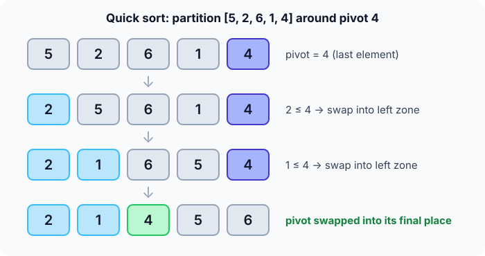
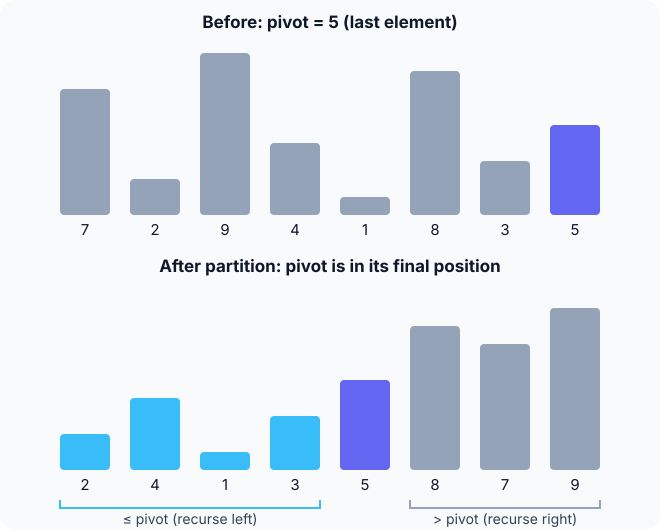

Prerequisites
- Recursion: a function that calls itself on a smaller input.
- Swapping two array elements.
- Big-O notation (see Complexity analysis), and ideally Merge sort.
The analogy
Everyday analogy
A coach picks one player as the reference height. Everyone shorter goes to the left wall, everyone taller to the right wall, and the reference player stands in the middle.
That middle spot is already correct. Each wall group then picks its own reference and splits again, until every group is one person. That's quick sort, with the pivot as the reference player.
How it works
Start with one partition by hand
Take [5, 2, 6, 1, 4], pivot = 4. Walk left to right; every number ≤ 4 gets swapped into a growing "left zone" at the front. Guess first, then open "Check".
Example: one partition, predict before you read
Step 1. Look at 5. Predict: does it join the left zone?
Check
No, 5 > 4. Skip it. The left zone is still empty.
Step 2. Cover the next line and guess: what happens to 2?
Check
2 ≤ 4, so it swaps to the front of the zone: [2, 5, 6, 1, 4]. 6 is next and is skipped.
Step 3. Now 1. Then the scan ends. Predict: where does the pivot go?
Check
1 ≤ 4 joins the zone: [2, 1, 6, 5, 4]. The pivot swaps into the slot right after the zone: [2, 1, 4, 5, 6].

Quick recall: Before reading further, cover the text above and say out loud: what does one partition guarantee?
Check your answer
The pivot is in its final position, with everything ≤ it on the left and everything bigger on the right.
Finish the run
Now sort each side of [2, 1 | 4 | 5, 6] the same way.
- Left side
[2, 1], pivot 1. Predict the result.Check
2 > 1 is skipped, then 1 swaps to the front:
[1, 2]. - Right side
[5, 6], pivot 6. Predict: does anything move?Check
No. 5 ≤ 6 stays in the zone and 6 stays last. Final array:
[1, 2, 4, 5, 6].
Quick recall: Without scrolling up, say out loud: why is the 4 never touched again after the first partition?
Check your answer
It's already in its final place: everything left of it is smaller or equal and everything right is bigger. The recursion only works on the two sides.
The rule in plain words
Pick the last number as the pivot. Walk through the rest; swap every number ≤ pivot into the left zone. Finally, swap the pivot right after the zone.
The pivot is now final. Repeat on the part left of it and the part right of it. A part of size 0 or 1 is already sorted.
Quick recall: Before you read the code, write the three steps of quick sort in your own words. Then check below.
Check your answer
1. Choose a pivot. 2. Partition: smaller-or-equal numbers to the left, bigger to the right, pivot in between. 3. Sort the left and right parts the same way.
The code
Read this code after you have done one partition by hand. It will make more sense.
static void swap(int *x, int *y) { int t = *x; *x = *y; *y = t; }
int partition(int a[], int lo, int hi) { /* Lomuto, pivot = a[hi] */
int pivot = a[hi], i = lo - 1; /* a[lo..i] is the left zone */
for (int j = lo; j < hi; j++)
if (a[j] <= pivot) swap(&a[++i], &a[j]);
swap(&a[i + 1], &a[hi]); /* pivot after the zone */
return i + 1;
}
void quick_sort(int a[], int lo, int hi) { /* sorts a[lo..hi] */
if (lo >= hi) return;
int p = partition(a, lo, hi);
quick_sort(a, lo, p - 1); /* a[p] is final: skip it */
quick_sort(a, p + 1, hi);
}Definition
What you just did, in one line: quick sort picks a pivot, partitions the array so the pivot lands in its final place with smaller-or-equal elements on its left, then sorts both sides recursively.
graph TD
A["5 2 6 1 4 (pivot 4)"] -->|partition| B["2 1 | 4 | 5 6"]
B --> C["2 1 (pivot 1)"]
B --> D["5 6 (pivot 6)"]
C -->|partition| E["1 | 2"]
D -->|partition| F["5 | 6"]
E & F --> G["1 2 4 5 6"]
[2, 1] around 1, what is the result? (Answer: [1, 2].)
How fast is it?
Quick recall: Before looking at the formula, predict: what if the pivot is always the largest number in its part, as on a sorted array?
Check your answer
Each partition only removes the pivot. The left part is everything else and the right part is empty, so the parts shrink by one each time.
With balanced pivots there are about $\log_2 n$ levels of $n$ work each, so $O(n \log n)$. With the worst pivots, the parts shrink by one:
$$(n-1) + (n-2) + \dots + 1 \;=\; \frac{n(n-1)}{2} \;=\; O(n^2).$$Random pivots, or the median of the first, middle and last elements, make the bad case very unlikely.
| Best | Average | Worst | Extra space | Stable | In-place |
|---|---|---|---|---|---|
| $O(n \log n)$ | $O(n \log n)$ | $O(n^2)$ | $O(\log n)$ stack | No | Yes |
Warning
"In-place" doesn't mean $O(1)$ memory here. The recursion stack is $O(\log n)$ on average, and can grow to $O(n)$ with bad pivots unless you recurse on the smaller side first.
Exam tip
A classic question: quick sort on an already sorted array with the first or last element as pivot. Every split is as unbalanced as possible, so the answer is $O(n^2)$.
Common mistakes
- Forgetting the final swap that puts the pivot after the left zone.
- Recursing on
[lo, p]instead of[lo, p - 1], which can recurse forever on the same range. - Using a fixed first or last pivot on data that may already be sorted.
Try it yourself
Exercise 1 (warm-up)
Partition [3, 7, 1, 5] with pivot 5 (the last element). What is the array afterwards, and where is the pivot?
Hint
3 and 1 join the left zone; 7 doesn't.
Answer
[3, 1, 5, 7], with the pivot 5 at index 2.
Exercise 2 (a bit harder)
How many comparisons does this quick sort make on [1, 2, 3, 4, 5]? Write your answer down before you open it.
Show answer
4 + 3 + 2 + 1 = 10, which is $\frac{n(n-1)}{2}$. Every pivot is the largest, so each right part is empty and the left part shrinks by one.
Did you know?
Did you know?
Tony Hoare invented quick sort in 1959, as a visiting student in Moscow, while working on sorting words for machine translation.
Today variants of it sort arrays of numbers in C++'s std::sort and Java's Arrays.sort for primitives. Learn this one and you understand what most standard libraries do.
Key points to remember
If you remember one thing from each line, remember the because.
- After a partition the pivot is final, because everything left of it is ≤ it and everything right of it is bigger.
- The average case is $O(n \log n)$ because reasonably balanced splits give about $\log_2 n$ levels of $n$ work.
- The worst case is $O(n^2)$ because a pivot that is always the min or max shrinks the problem by only one.
- It is not stable because partition swaps can jump an element over an equal one.
- Its extra space is $O(\log n)$ because the only memory it uses is the recursion stack.
Self-check questions
Answer these in order, out loud. They follow the page, so your answers become the script of your video.
- How is quick sort like a coach splitting players by height?
Sample answer
The coach picks a reference player, sends shorter players left and taller players right, and the reference player's spot is now correct. Each group then repeats the process.
- Walk through the first partition of [5, 2, 6, 1, 4] with pivot 4.
Sample answer
5 is skipped, 2 joins the left zone, 6 is skipped, 1 joins the zone, then 4 swaps in after the zone: [2, 1, 4, 5, 6].
- Why does the code recurse on
p - 1andp + 1, not onp?A good answer says what is special about index
p.Sample answer
The pivot at
pis already in its final place, so there's nothing left to do there. Including it could also make a range never shrink, giving infinite recursion. - So what is quick sort, in one sentence?
Sample answer
It partitions the array around a pivot so the pivot lands in its final place, then sorts the two sides the same way.
- Why does a sorted array make this quick sort $O(n^2)$?
A good answer says how big the two sides are.
Sample answer
With the last element as pivot, the pivot is always the maximum, so one side is empty and the other has everything else. The sizes go $n-1$, $n-2$, …, adding up to $\frac{n(n-1)}{2}$.
- What are its best, average and worst cases, and its extra space?
Sample answer
$O(n \log n)$ in the best and average case, $O(n^2)$ in the worst case. Extra space is the recursion stack, $O(\log n)$ on average.
- How do you make the bad case unlikely?
Sample answer
Choose a random pivot, or the median of the first, middle and last elements. Then no particular input order, like sorted, can trigger the worst case on purpose.
- Quick sort is usually fastest. Why would anyone choose merge sort or heap sort instead?
Sample answer
Merge sort is stable and guarantees $O(n \log n)$. Heap sort guarantees $O(n \log n)$ with $O(1)$ extra memory. Quick sort offers neither guarantee.
- If you had to teach this to a friend in 2 minutes, what would you leave out, and why?
Sample answer
I'd leave out the Lomuto index details and the stack-space discussion. I'd keep the coach analogy, one partition on a small array, "the pivot is final", and "fast on average, $O(n^2)$ with bad pivots".
External resources
- VisuAlgo: Sorting: pick "QUI" or "R-Q" (random pivot) and compare.
- GeeksforGeeks: Quick sort: an article covering Lomuto and Hoare partitioning.
- Wikipedia: Quicksort: history, pivot strategies and analysis.
- Toptal: Quick sort animation: compare it with the other sorts on different inputs.
Videos
- YouTube: quick sort as a folk dance: the AlgoRythmics video for quick sort.
- YouTube search: quicksort partition explained: pick a walkthrough of the partition step.